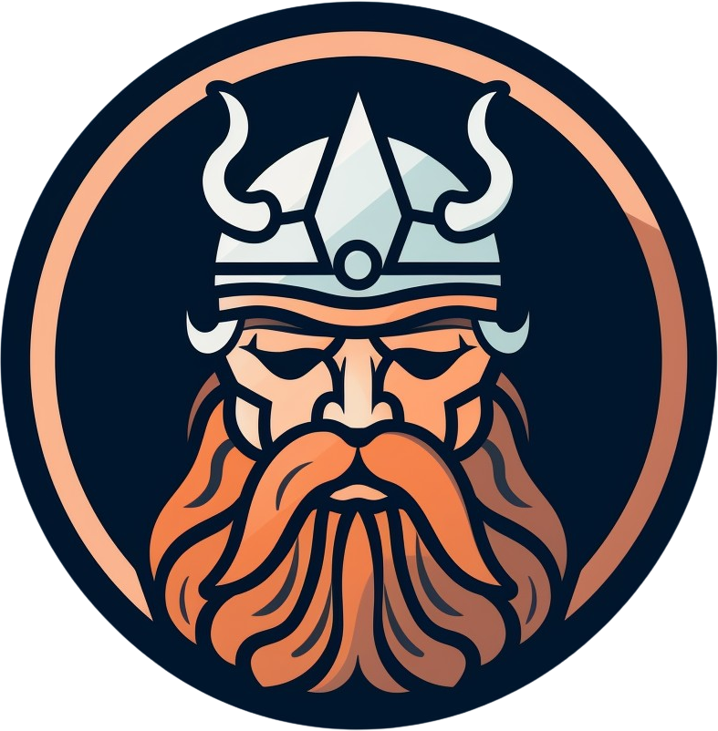

Seamlessly expose your Valheim server data through a user-friendly REST API and real time events
Seamless integration
Install the plugin and extend your server's capabilities in just a few minutes. Unlock new integration possibilities.
Game server API
Use the provided REST API to query game server data such as player info, boss progression and game world details.
Game events
Stay updated with live, in-game events as they occur. Build interactive client applications that mirror the game actions.